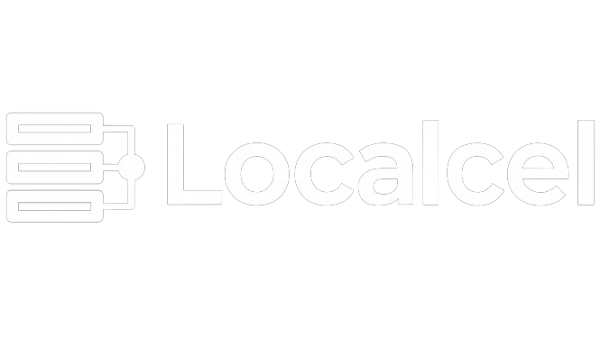

Localcel.py.cpp eliminates runtime packaging overhead by providing an ultra-lightweight, compile-to-binary loader. It bundles resource files, handles administrative elevation cleanly, installs required packages, and supervises active applications.
The entire helper program compiles down to ~700KB (Windows) / ~750KB (Linux), bypassing heavy runtimes like Node.js, .NET, or Electron.
Dependencies requiring administrative context are batched together. System elevations use Windows UAC or a single Linux Polkit (pkexec) GUI prompt.
The bootstrapper automatically renders a beautiful borderless setup screen mimicking a native installation. If run from a displayless server, it falls back to a terminal interface.
Maintains parent-child connection boundaries. It captures self-update commands (exit code 42), restarts, and automatically terminates orphans on shutdown.
| Feature | Windows Build Stable | Linux Build Alpha |
|---|---|---|
| UI Library | Native GDI+ Win32 controls | GTK 3 (Wayland & X11 native backends) |
| Layout Positioning | Absolute coordinates (500x200) | Absolute layout using GtkFixed |
| Elevation Mechanism | Windows UAC manifest | Polkit GUI dialog (pkexec) with sudo fallback |
| Embedded Assets | Win32 RCDATA resource wrapper |
C++ byte arrays inside generated headers |
| Supervision | Windows Job Objects (Job Close bounds) | POSIX forks & Signal interception (SIGPIPE, SIGINT) |
Build directly inside the x64 Native Tools Command Prompt for VS 2022:
if not exist dist mkdir dist
cl /EHsc /std:c++20 build.cpp /Fe:dist\build.exe
dist\build.exe1. Install development header prerequisites (GTK 3 and X11):
sudo apt update && sudo apt install -y libgtk-3-dev libx11-dev2. Execute the C++ build script:
g++ -std=c++20 build.cpp -o dist/build
./dist/build
./dist/LocalcelTo serve this site as the official repository landing page:
docs/index.html contents to your main repository.master or main) and specify the directory folder as /docs.